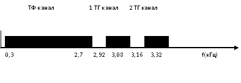
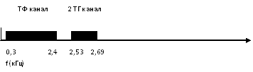
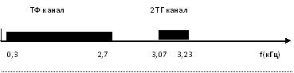
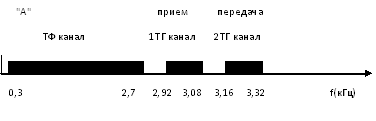
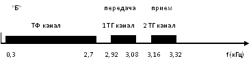
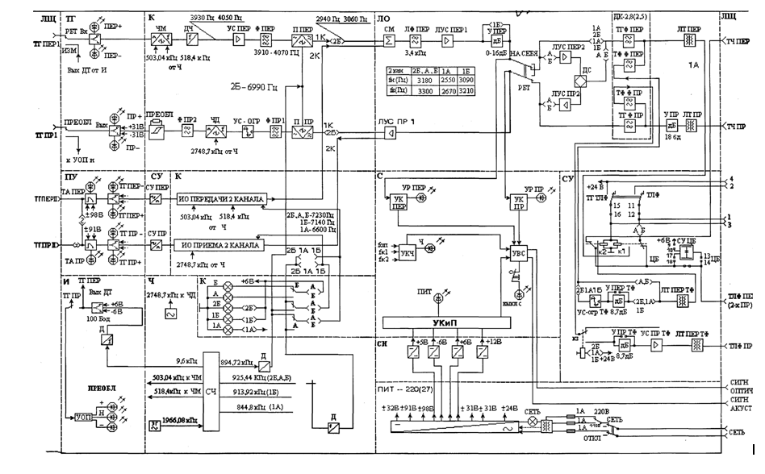
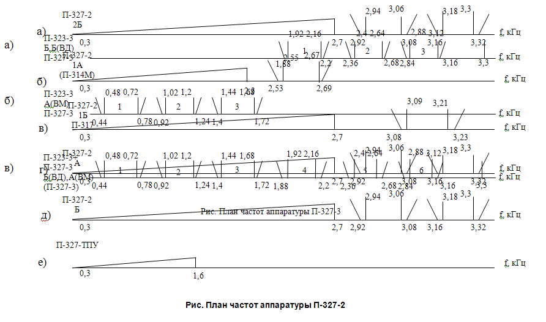

Тема №4. Устройство аппаратуры вторичного уплотнения каналов тональной частоты.
Занятие №2. Назначение, состав, тактико-технические данные, режимы работы аппаратуры П-327-2, 3; П-327-ПУ6; П-327-ТПУ.
Учебные вопросы:
Литература:
1. Назначение, состав, тактико-технические данные, режимы работы аппаратуры П-327-2, 3.
1.1. Тактико-технические характеристики аппаратура П-327-2
Комплекс военной аппаратуры П-327 предназначен для образования каналов тонального телеграфирования (ТТ) и низкоскоростных каналов передачи данных (ПД) в сетях и на прямых линиях связи различных звеньев управления.
Аппаратура П-327-2 дает возможность получить два 100-бодных канала ТТ в одном типовом канале ТЧ при работе с однотипной аппаратурой или один 75-бодный канал при работе с аппаратурой П-314М или П-317.
Аппаратура П-327-2 может работать непосредственно по двухпроводным цепям, обеспечивая образование одного 100-бодного канала ТТ и одного ТЛФ канала.
Назначение.
Во всех перечисленных режимах обеспечивается получение в канале ТЧ кроме каналов ТТ одного телефонного канала. Эффективно передаваемая полоса частот этого канала при работе с однотипной аппаратурой и аппаратурой П-317 равна 0,3 - 2,7кГц, а при работе с аппаратурой П-314М - 0,3 - 2,5 кГц. При работе с аппаратурой П-314М возможно использование не только типового канала ТЧ, но и канала ТЧ с эффективно передаваемой полосой частот 0,3 - 2,7кГц.
Аппаратура П-327-2 может работать непосредственно по двухпроводным цепям, обеспечивая образование одного 100-бодного канала ТТ и одного ТЛФ канала. Телефонный канал при этом получается двухпроводным, имеет ЭППЧ до 2,7 кГц и может использоваться в телефонных сетях МБ, ЦБ и АТС.
Нормальная работа аппаратуры П-327-2 обеспечивается при температуре окружающего воздуха от -40 до +50 °С.
Атмосферное Давление при этом может быть от 60 до 100 кПа, а относительная влажность до 98% при температуре +35 °С.
Использование каналов.
Каналы ТТ аппаратуры рассчитаны на подключение ТГ устройств, работающих токами двух направлений с разделенными цепями передачи и приема.
Для подключения ТГ аппаратов, работающих однополосными посылками как с разделенными, так и с неразделенными цепями передачи и приема, используются переходные устройства, размещенные в аппаратуре.
Состав основного оборудования.
1. Аппаратура П-327-2
2. ЗИП
3. Эксплуатационная документация, линейный щиток.
Система управления и контроля.
В аппаратуре предусмотрена оптическая аварийная сигнализация
· о пропадании сигналов на выходе тракта передачи,
· пропадании напряжений питания,
· неисправностях в генераторном оборудовании
· о понижении уровня приема более чем на 25 дБ по сравнению с номинальным,
· пропадании уровня передачи.
В аппаратуре обеспечивается возможность регулировки преобладаний в каналах ТГ на ±20%.
Для проверки и настройки каналов ТГ в аппаратуре имеются:
· датчик телеграфных сигналов вида 1 : 1 (датчик точек) с номинальной скоростью 200 Бод
· индикатор преобладаний, обеспечивающий точность устранения преобладаний не хуже 3%.
Режимы работы и электрические параметры системы.
Аппаратура П-327 является многоканальной аппаратурой тонального телеграфирования с частотным разделением каналов и с частотной модуляцией.
Аппаратура П-327-2 имеет пять режимов работы: 2Б, 1А, 1Б, А и Б.
Режимы работы аппаратуры и их линейные спектры:
Аппаратура имеет следующие режимы работы: 2Б, 1А, 1Б, А, Б.
А) Режим "2Б" - четырехпроводный, двухканальный, для встречной работы с однотипной аппаратурой.
Линейный спектр. 
Б) Режим "1А" - четырехпроводный, одноканальный, для встречной работы с аппаратурой П-314М.
Линейный спектр. 
В) Режим "1Б" - четырехпроводный, одноканальный, для встречной работы с аппаратурой П-317.
Линейный спектр.
Г) Режим "А" ("Б") - двухпроводный одноканальный для встречной работы с однотипной аппаратурой в режиме " Б " (" А ").
Линейный спектр. 
Дальность связи:
При работе по каналу ТЧ - определяется дальностью действия используемого канала ТЧ. Может быть увеличена путем организации переприемов. При работе непосредственно по двухпроводной цепи определяется затуханием этой цепи. Номинальное значение затухания цепи не более 8 дБ (1 Нп) (для П-274М - 4 км; для П-268 - 8 км; для ПТРК - 3 км).
Среднее время наработки на отказ - 7500 часов.
Основные электрические характеристики каналов ТТ.
Каналы аппаратуры П-327-2 скорость телеграфирования до 100 Бод.
Уровни передачи аппаратуры П-327-2 по каналам ТЧ равны:
· В двухканальном режиме - 29дБ(-3,35 Нп)
· В одноканальном режиме -9дБ(-1 Нп)
Номинальные уровни приема аппаратуры П-327-2 по каналам ТЧ равны:
· В двухканальном режиме - 12дБ(-1,38 Нп)
· В одноканальном режиме -26дБ(-3Нп)
При работе по двухпроводной линии уровень передачи равен -13дб (-1,5 Нп0), а уровень приема составляет -21 дБ(-2,4 Нп).
Средняя мощность сигналов всех каналов ТТ аппаратуры П-327-2, приведенная к точкам с нулевым относительным уровнем, равна 50мкВт.
Входное и выходное сопротивления аппаратуры П-327 с стороны подключения к каналу ТЧ равны 600 0м. Допустимое отклонение сопротивления не более 210 Ом.
Входное сопротивление ТГ цепей передачи постоянному току составляет 1000±1000м при напряжении на входе 20±5В, а цепей приема не превышает 5100м.
Напряжение питания ТГ цепи передачи ±20 В. Работоспособность канала сохраняется при величине напряжения от 5 до 30 В. Номинальная величина тока 20 мА.
Напряжение питания ТГ цепей приема ±20 В. Допустимое отклонение напряжения от ±15до±25 В.
Разность напряжений положительной и отрицательной полярности не превышает 7% от средней величины этого напряжения.
Коэффициент пульсации в ТГ цепях приема не превышает 3%.
Телеграфные цепи допускают включение дополнительного внешнего источника питания с напряжением 60 В.
Предусмотрена замена блока телеграфных устройств второго канала на блок переходного устройства. При этом номинальная величина напряжения однополюсных посылок в цепях передачи и приема составляет 70+-10В при номинальной нагрузке 1400 Ом.
Полоса частот каждого канала ТТ равна f1-f2 = 160 Гц.
Полоса рас фильтровки - 80 Гц;
Девиация частоты f = ± 60 Гц.
fнn = fcр - f
fвn = fср + f
Здесь fнn и fвn нижняя и верхняя характеристические частоты п -го канала. Средние частоты каналов зависят от режима работы аппаратуры.
В комплексе П-327 сигналам положительной полярности ее ответствует нижняя, а сигналам отрицательной полярности - верхняя характеристическая частота. В случае отсутствия ток в телеграфной цепи передачи передается верхняя характеристическая частота.
Допустимое отклонение характеристических частот от номинальных значений на линейных выходах всех типов аппаратуры П-327 составляет не более ± 1 Гц.
Электропитание аппаратуры осуществляется:
· От сети переменного тока 50 Гц 220В (-15 и +10%);
· От сети переменного тока 400 Гц 115+-6В
· От источника постоянного тока с напряжением 27 В (22-30В)
Потребляемая мощность:
· От источника переменного тока: 60 ВА
· От источника постоянного тока: 60 ВТ
Масса аппаратуры: 25 кг.
Вес комплекта: 45 кг.
Габариты: 702х271х164.
Устройство аппаратуры П-327-2.
Все оборудование размещено в 14 блоках:
· Блок питания от сети переменного тока (ПИТ-220) - 1
· Блок стабилизаторов напряжений (СН) - 1
· Блок измерений (И) - 1
· Блок канала (К-100) - 2
· Блок телеграфных устройств (ТГ) - 2
· Блок синтезатора частот (Ч) - 1
· Блок коммутации частот (К) - 1
· Блок согласующих устройств (СУ) - 1
· Блок разделительных фильтров (ДК-2,8) - 1
· Блок линейного оборудования (ЛО) - 1
· Блок переходных устройств (ПУ) - 1
В комплекте ЗИП аппаратуры имеются съемные блоки:
· Блок питания от сети переменного тока,
· Блок разделительных фильтров,
· Блок переходного устройства.
Измерительные и контрольные устройства.
Датчик точек и индикатор преобладания аппаратуры П-327-2 служат для проверки работоспособности и настройки каналов ТТ.
Устройства контроля обеспечивают оптическую сигнализацию о пропадании частот генераторного оборудования, напряжения питания, сигналов ТТ на выходе тракта передачи и о снижение уровня их приема.
Переходное устройство (ПУ, находится в ЗИП) может подключаться в телеграфную цепь только второго канала. Оно обеспечивает работу по этому каналу токами одного направления с разделенными и неразделенными цепями передачи и приема. Режимы работы ПУ устанавливаются колодкой на его передней панели.
1.2. Тактико-технические характеристики аппаратуры П-327-3.
Назначение.
Комплекс военной аппаратуры П-327 предназначен для образования каналов тонального телеграфирования (ТТ) и низкоскоростных каналов передачи данных (ПД) в сетях и на прямых линиях связи различных звеньев управления.
Аппаратура П-327-3 позволяет образовать три 200-бодных канала ТТ в типовом канале ТЧ. Предусмотрена возможность работы по одному каналу ТЧ двух комплектов П-327-3. При этом получается шесть 200-бодных каналов ТТ. Обеспечивается возможность работы аппаратуры П-327-3 с аппаратурой типа П-319-3, П-319Г, ТТ-144, ТТ-48 и ТТ-12.
Использование каналов.
Каналы ТТ аппаратуры рассчитаны на подключение ТГ устройств, работающих токами двух направлений с разделенными цепями передачи и приема. Для подключения ТГ аппаратов, работающих однополосными посылками как с разделенными, так и с неразделенными цепями передачи и приема, используются переходные устройства, размещенные в аппаратуре П-327-ПУ6 и П-327-ПУ1
Состав основного оборудования:
1. аппаратура П-327-3
2. одиночный ЗИП,
3. съемные детали в ящике
4. эксплуатационная документация.
Система управления, сигнализации и контроля.
В аппаратуре предусмотрена оптическая аварийная сигнализация о пропадании сигналов на выходе тракта передачи, пропадании напряжений питания, неисправностях в генераторном оборудовании и о понижении уровня приема более чем на 17,4 дБ по сравнению с номинальным.
В аппаратуре обеспечивается возможность регулировки преобладаний в каналах ТГ на ±20%.
Для проверки и настройки каналов ТГ в аппаратуре имеются датчик телеграфных сигналов вида 1 : 1 (датчик точек) с номинальной скоростью 200 Бод и индикатор преобладаний, обеспечивающий точность устранения преобладаний не хуже 3%.
Режимы работы и электрические параметры системы.
Аппаратура П-327-3 является трехканальной аппаратурой тонального телеграфирования с частотным разделением каналов и с частотной модуляцией.
Аппаратура П-327-3 подключается к каналам ТЧ четырехпроводной соединительной линией в точках с относительными уровнями -13 дБ (-1,5 Нп) в тракте передачи и +4 дБ (+0,5 нП) в тракте приема.
Затухание соединительной линии должно быть не более 10 дБ.
Такое затухание имеет кабель:
· П-274М длиной 5 км,
· П-268 - 10 км
· ПТРК - 4 км.
Канал ТЧ может иметь четырехпроводные транзиты. Электрические параметры канала ТЧ должны соответствовать нормам.
Соединительные линии от П-327-3 к ТГ устройствам могут быть как двухпроводными, так и однопроводными (провод-земля).
Максимальная длина этих линий может быть:
· до 6 км по кабелю П-274М,
· 11 км по кабелю П-268
· 6 км по кабелю ПТРК.
Аппаратура П-327-3 имеет три режима работы: Б, Б(ВД) и А(ВМ).
В режиме Б аппаратура работает по одному каналу ТЧ, образуя в нем три канала ТТ в полосе частот 1,8-3,4 кГц.
В режиме Б(ВД) (ВД-ведущая) также образуется три канала ТТ в полосе частот 1,8-3,4 кГц и обеспечивается возможность подключения к аппаратуре П-327-3 другой П-327-3 или П-327-ТПУ.
В режиме А(ВМ) (ВМ-ведомая) в аппаратуре П-327-3 образуется три канала ТТ в полосе частот 0,3-1,8 кГц и создается возможность подключения ее к ведущей П-327-3.
В режиме А (ВМ) аппаратура П-327-3 работает только как ведомая.
Входное и выходное сопротивления аппаратуры со стороны подключения к каналу ТЧ равны 600 Ом. Входное сопротивление ТГ цепей передачи по постоянному току составляет 1000±100 Ом при напряжении на входе 20±5 В, а ТГ цепей приема не должно превышать 510 Ом.
Напряжение питания ТГ цепей передачи и приема ± 20В.
Телеграфные цепи допускают включение дополнительного внешнего источника питания напряжением 60 В.
Основные электрические характеристики каналов.
Передача ТГ сигналов по каналам аппаратуры П-327-3 может производиться со скоростью от нуля до 200 Бод. Возможно повышение скорости до 300 Бод за счет увеличения краевых искажений ТГ сигналов.
Собственные краевые искажения ТГ сигналов в каналах ТТ не превышают 5%. При плавном повышении уровня приема на 8,7 дБ или его снижении на 17,4 дБ по сравнению с номинальным собственные искажения увеличиваются не более чем на 2%.
Номинальные уровни передачи каждого канала аппаратуры П-327-3 на ее линейных зажимах равны -29,5 дБ (-3,4 Нп), а уровни приема -12,5 дБ (-1,4 Нп).
В аппаратуре П-327-3 используется частотный метод разделения каналов.
Ширина полосы частот каждого канала аппаратуры П-327-3 равна 320 Гц;
Полоса расфильтровки - 80 Гц;
Девиация частоты f = ±120 Гц;
Средняя частота канала тонального телеграфирования П-327-3 в спектре канала ТЧ определяется по формуле:
Fк=120 + 480к, где к - номер канала.
В зависимости от режима к изменяется от 4 до 6 или от 1 до 3.
Верхняя частота fср +?f = f2 соответствует посылки отрицательной полярности или бестоковой посылке.
Нижняя частота fср -?f = f1 соответствует посылки положительной полярности или токовой посылке.
Аппаратура образует телеграфные каналы в режиме 1. Для перевода в режимы 2 и 3 необходимо использовать П-327-ПУ-6 и П-327-ПУ-1.
Электропитание аппаратуры.
Электропитание аппаратуры осуществляется от сети переменного тока 50 Гц 220 В (187-242 В) или 400 Гц 115 В (109- 121 В), а также от источника постоянного тока с напряжением 27 В (22-30 В).
Потребляемая мощность от сети переменного тока 40 В-А, а от источника постоянного тока 25 Вт.
Масса аппаратуры 25 кг, а всего комплекта 46 кг.
Общее устройство П-327-3.
Аппаратура П-327-3 собрана в одном корпусе. С лицевой стороны аппаратура закрывается съемной крышкой.
На левой боковой стенке корпуса расположены две колодки с гравировками режимов Б, Б (ВД) и А (ВМ) для установки режимов работы аппаратуры и одна 30-контактная колодка с гравировкой КОНТРОЛЬ для подключения внешних измерительных приборов. На правой боковой стенке имеются 10-контактная колодка с гравировкой ТЧ-ТЛФ для подключения канала ТЧ и телефонного переговорного устройства при работе ее в аппаратной (без линейного щитка), 30-контактная колодка с гравировкой ВВОД для подключения аппаратуры к коммутационному оборудованию ТГ каналов аппаратной, к линейному щитку или к аппаратуре П-327-ПУ6 и вывод заземления.
Для крепления на рабочем месте в корпусе имеются боковые планки с отверстиями, которые служат также и для переноса аппаратуры.
Аппаратура размещена в 14 блоках. Полное и выгравированное на передней панели наименование блоков:
1. Блок питания от сети тока переменного (ПИТ-220) - 1
2. Блок стабилизаторов напряжения (СН) - 1
3. Блок сигнализации (С) - 1
4. Блок измерений (И) - 1
5. Блок синтезатора частот (Ч-1) - 1
6. Блок компенсации преобладаний (КП) - 1
7. Блок телеграфных устройств (ТГ) - 3
8. Блок каналов (К-200) - 3
9. Блок линейного оборудования (ЛО)- 1
10. Блок помехоподавляющих фильтров - 1
В каждом блоке размещены узлы аппаратуры, которые представляют собой законченную функциональную часть схемы. Электрическое соединение между блоками осуществляется с помощью жгутов. Основой конструкции блоков являются печатная плата с разъемом и лицевая панель, скрепленные между собой с помощью держателя. Для удобного доступа к деталям, расположенным внутри блоков, предусмотрена возможность развертывания печатных плат. Для контроля и отыскания неисправностей на печатных платах блока установлены контрольные штыри. Блок крепится в корпусе с помощью невыпадающих винтов.
На лицевых панелях блоков имеются две прорези для установки съемной ручки при извлечении блока из корпуса.
Органы управления и сигнализации, расположенные на лицевых панелях блоков, имеют следующее назначение.
Измерительные устройства.
Измерительные устройства аппаратуры П-327-3 предназначены для проверки её исправности и настройки каналов ТТ.
Состав измерительных устройств:
· Блок И (датчик биполярных нейтральных сигналов ДТ (датчик точек) и индикатор преобладаний (ИП))
Датчик точек обеспечивает получение биполярных посылок cо скоростью следования 50, 100 или 200 бод. Датчик состоит из делителя ДДТ и выходного устройства ВЫХДТ. На вход его синтезатора частот подаются колебания с частотой 9600 Гц. Делитель датчика имеет общий коэффициент деления 384. Hа его выходы выводятся импульсные последовательности со скоростями 200, 100 и 50 бод. Выбор скорости датчика осуществляется перепайкой перемычки внутри блока.
В аппаратуре П-327-3 перемычка устанавливается на делении 200 бод (общий коэффициент делителя 96). Выходное устройство датчика преобразует однополярные выходные сигналы делителя в биполярные напряжением + 6 В.
Индикатор преобладаний предназначен для оценки величины преобладания в каналах ТТ аппаратуры П-327-3. В него входят устройство оценки преобладаний УОП и индикаторные светодиоды.
Устройство оценки преобладаний представляет собой пороговую схему, которая сравнивает измеряемую величину с допустимыми ее значениями. Преобладания, не превышающие ±3%, считаются нормальными. В этом случае загорается светодиод "H" (норма). Преобладания свыше ±3% оцениваются как недопустимые. При этом загораются светодиоды "+" или "-" (в зависимости от знака преобладаний). Последний загорается, если отсутствуют телеграфные посылки или срабатывает схема блокировки.
Проверка исправности аппаратуры и настройка ее каналов производится путем подключения датчика и индикатора к каналу ТТ установкой тумблера РБТ - ИЗМ соответствующего канала в положение ИЗМ. Нажатием кнопки КОНТР выход датчика подключается на вход индикатора, что обеспечивает возможность проверки их работоспособности.
Устройства контроля.
Состав устройств контроля:
· Блок С (устройства контроля уровней передачи и приёма УК ПЕР 1, УК ПЕР 2, УК ПР 1 и УК ПР 2, устройство контроля питающих напряжений, устройство контроля частот)
Устройства контроля уровней УК ПЕР 1, УК ПЕР 2, УК ПР 1 и УК ПР 2 обеспечивают оптическую сигнализацию о пропадании уровней передачи и приема, а также о снижении уровней приема более чем на 17,4дБ отдельно для каналов 1 - 3 и 4 - 6.
Устройство контроля питающих напряжений обеспечивает оптическую сигнализацию о пропадании напряжений электропитания +5 В; +6 В, - 6 В и +12 В.
Устройство контроля частот обеспечивает оптическую сигнализацию о пропадании несущих частот и частоты, подаваемой к ЧД каналов. О выходе контролируемых величин за пределы допусков сигнализируют светодиоды на передней панели аппаратуры, снабженные гравировками: ПЕР 1, ПР 1, ПЕР 2, ПР 2; ПИТ Ч.
Устройства контроля взаимозависимы. Любая из сигнальных цепёй связана с общестанционной (внешней) сигнализацией. Предусмотрена возможность ее отключения после срабатывания нажатием кнопки ВЫКЛ С.
2. Назначение, состав, тактико-технические данные, режимы работы аппаратуры П-327-ПУ6.
Устройство переходное П-327-ПУ6 предназначено для сопряжения однополосных ТГ аппаратов с 2-х полосными каналами аппаратуры ТТ П-318М, П-319 и П-327.
ПУ обеспечивает сопряжение 6 каналов аппаратуры ТТ с однополюсными ТГ аппаратами типа СТА-2М и работу на скорости 1ОО Бод.
Режимы работы ПУ:
1. Двухполюсный с раздельными цепями передачи и приема.
2. Однополюсный с разделенными цепями передачи и приема.
3. Однополюсный с неразделенными цепями передачи и приема.
Питание двухполосных цепей передачи осуществляется со стороны ПУ, а приема - со стороны канала (т.е. аппаратуры П-327-12). Напряжение на выходе 2-х полюсных цепей передачи по постоянному току равно +- 2ОВ, допускаются отклонения напряжения от +-15 до +- 25В.
Питание однополосных ТГ цепей передачи и приема осуществляется со стороны ПУ. Напряжение однополюсных цепей на входе передачи и выходе приема равно 8ОВ с допусками +1О-15В.
В режиме "3" допускается подключение ТГА к ПУ по схеме "провод-земля".
Искажения, вносимые ПУ в тракт передачи, не более 4О% при скорости 5О Бод, 8% - 1ОО БОд.
Искажения, вносимые ПУ в тракт приема, не более 8% при скорости 1ОО БОд.
Питание: сеть 22ОВ/5О Гц, мощность потребления 165 В.А. Масса - 23 кг.
В одном моноблоке имеется 2 автономные трехканальные группы ПУ, каждая группа имеет 3 блока ПУ, блок питания от сети переменного тока 22ОВ ПИТ и блок фильтра радиозащиты.
Непосредственное подключение группы ПК к П-327-12 при помощи кабелей возможно только в следующей последовательности групп каналов: 1...3; 4...6, 7...9; 1О...12. Это объясняется тем, что в П-327-12 телеграфные каналы имеют выходы на 3О-ти контактные колодки трехканальными группами в такой последовательности.
Режимы работы устанавливаются с помощью замыкателей отдельно для каждого канала:
На входе и выходе трактов передачи и приема имеются гнезда, позволяющие осуществлять обход ПУ, т.е. режим "1".
П-327-ТПУ предназначена для ведения служебной телефонной связи в неиспользованной для ТТ полосе частот уплотняемого канала ТЧ с одновременной работой аппаратуры ТТ типа П-327-2, П-327-3, П-327-12.
Связь обеспечивается по одному из шести направлений с ЭППЧ:
- О,3 -1,5 кГц в режиме "фильтр П-319, П-327";
- О,3 - 1,2 кГц в режиме "фильтр П-318-6";
- О,3-3,4 кГц в режиме "фильтр отключен".
Уровень передачи: - 26 дБ. Уровень приема: - 6 дБ.
Эти номиналы частот устанавливаются перепайкой перемычек внутри блока.
Номинальные Rвх и Rвых равны 6ОО Ом.
Масса - 25 кг.
Электропитание аппаратуры осуществляется от сети 22ОВ/5О Гц.
Состав аппаратуры П-327-ТПУ:
- блок питания ПИТ;
- стабилизатор напряжения СН;
- блок приемника -передатчика ПП;
- блок приемника- передатчика N 1 ПП1;
- блок приемника тонального вызова ПТВ - 3 шт.;
- блок коммутации К;
- фильтр помехоподавляющий ФП.
Рассмотрим принцип работы аппаратуры с использованием структурной схемы П-327-ТПУ (см. слайд).
П-327-ТПУ содержит следующие функциональные части:
- формирователь сигналов вызывных частот и частот преобразования (ФС) >1;
- тракт передачи > 2;
- тракт приема > 3;
- приемники тонального вызова > 4;
- устройство индикации > 5.
ФС предназначен для получения вызывных сигналов с частотами 8ОО, 15ОО и 21ОО Гц, которые используются для вызова абонента, а также частот преобразования, используемых для формирования частоты срабатывания блока ПТВ.
Все частоты формируются от одного ЗГ.
Вызывные частоты имеют предназначение:
- 8ОО Гц - для организации служебной связи и вызова при встречном режиме работы с аппаратурой П-318-УТТТ ТП;
- 15ОО Гц - П-319-ТПУ, П-327-ТПУ;
- 21ОО Гц - для организации связи в полном спектре телефонного канала.
3. Назначение, состав, тактико-технические данные, режимы работы аппаратуры П-327-ТПУ.
Аппаратура П-327-ТПУ включает в себя шесть телефонных переговорных устройств (ТПУ) и предназначена для получения шести служебных ТФ каналов по шести каналам ТЧ. Возможна работа также с аппаратуре П-319-6 и П-319-3.
Назначение:
Аппаратура П-327-ТПУ включает в себя шесть телефонных переговорных устройств (ТПУ) и предназначена для получения шести служебных ТФ каналов по шести каналам ТЧ. Возможна работа также с аппаратурой П-319-6 и П-319 - 3.
Режимы работы:
Аппаратура П-327-ТПУ может работать в полосах частот:
· 0.3 - 1,5кГц (режим ФИЛЬ'ГР П-327, П-319);
· 0,3 - 1,2кГц (режим ФИЛЬТР П-318);
· 0,3 - 3,4кГц (режим ФИЛЬТР ОТКЛ).
Устройство П-327-ТПУ:
В зависимости от этого тракты передачи и приема аппаратуры включают в себя постоянные и сменные элементы.
Оборудование аппаратуры размещено в 9 блоках:
1. Блок питания (ПИТ) - 1 шт.
2. Блок стабилизаторов напряжения (СН) - 1 шт.
3. Блок приемника-передатчика (ПП) - 1шт.
4. Блок приемника-передатчика 1 (ПП 1) - 1 шт.
5. Блок приемника тонального вызова (ПТВ) - 3 шт.
6. Блок коммутации (К) - 1шт.
7. Блок фильтров радио-защиты - 1 шт.
На передней панели блока К находятся основные органы управления и индикации:
· Переключатель направления 1-6 для выбора направления служебной связи;
· Шесть светодиодов ПР ВЫЗ 1-6 для сигнализации о поступлении вызова с одного из шести направлений.
· Переключатель ФИЛЬТР на три положения П-318, П-327 (П-319) и откл для установки режима работы аппаратуры;
· Три кнопки с общей гравировкой ПЕР ВЫЗ для подачи вызова с частотой 1500, 800 или 2100 Гц.
На сетке МТ находиться микротелефон МТ-50 и тумблер РБТ - НА СЕБЯ. На правой боковой стенке расположены девять гнезд и клемма заземления. Шесть из них с гравировками ТЛФ1 - ТЛФ6 обеспечивают подключение ТПУ к линейным щиткам аппаратуры ТТ, а два гнезда СЕТЬ - подключения кабеля питания и гнездо СИГН внешней сигнализации. НА левой боковой стенки расположены гнезда: ВВОД - для подключения внешних измерительных приборов; ДИСТ - для дистанционного управления аппаратурой.
Принципиальная схема П-327-ПУ6:
Тракт передачи в режиме ФИЛЬТР П-327, П-319 включает:
микрофон, усилитель УС ПЕР 1, усилитель УС ПЕР 2, фильтр передачи Ф ПЕР 1, усилитель-ограничитель УО ПЕР 1, переключатель режимов работы S36 ФИЛЬТР, тумблер S2a РБТ - НА СЕБЯ и переключатель S16 НАПРАВЛЕНИЕ.
Речевые сигналы после усиления в УС ПЕР 1 и УС ПЕР 2 ограничиваются по спектру фильтром нижних частот Ф ПЕР 1 до частоты 1500Гц, высвобождая этим участок полосы частот канала ТЧ 1500 - 3400Гц для сигналов аппаратуры ТТ.
Усилитель-ограничитель ограничивает сигналы по амплитуде, предотвращая перегрузку канала ТЧ.
Переключателем S3 ФИЛЬТР обеспечивается коммутация трех режимов работы: П-327, П-319 - П-318 - ОТКЛ.
Переключатель Sl НАПРАВЛЕНИЕ предназначен для выбора направления телефонной связи.
При работе аппаратуры в режиме ФИЛЬТР П-318 речевые сигналы проходят через блок приемника-передатчика ПП1. Назначение элементов этого блока (УС ПЕР 3, Ф ПЕР 2, УО ПЕР 2) и блока ПП одно и то же. Фильтр нижних частот Ф ПЕР 2 имеет полосу пропускания до 1200 Гц.
В режиме ФИЛЬТР ОТКЛ взамен элементов блоков ПП и ПП1 включается фильтр нижних частот Ф ПЕР 3, который имеет полосу пропускания до 3,4 кГц. У
Тракты приема блоков ПП и ПП1 содержат усилители УС ПР 2, УС ПР3 и фильтры ФПР1, ФПР2, которые имеют полосу пропускания до 1500 и 1200Гц соответственно.
В режиме ФИЛЬТР ОТКЛ речевые сигналы с выхода УС ПР 1 подаются прямо на микротелефон.
Вызывные сигналы формируются в генераторном оборудовании, которое включает в себя задающий генератор с частотой 1966,08 кГц синтезатор частот вызова 96; 51,2; 134,4 кГц.
 